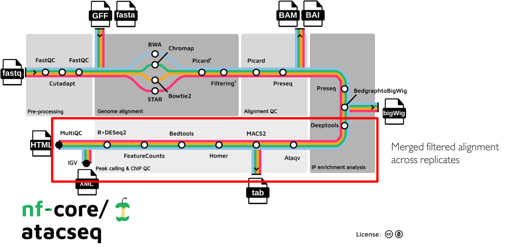
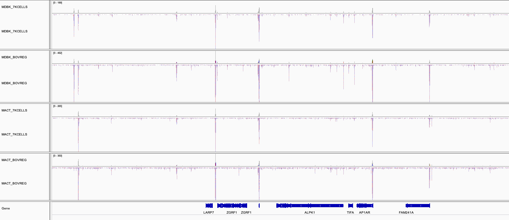

nf-core/atacseq
Introduction
nfcore/atacseq is a bioinformatics best-practice pipeline used for the analysis of ATAC-seq data. As discussed before, the pipeline is built using Nextflow, a workflow manager to run tasks across multiple compute infrastructures in a very portable manner. It uses Docker/Singularity containers making installation trivial and results highly reproducible. The Nextflow DSL2 implementation of this pipeline uses one container per process which makes it much easier to maintain and update software dependencies. Where possible, these processes have been submitted to and installed from nf-core/modules in order to make them available to all nf-core pipelines, and to everyone within the Nextflow community.
The DSL2 version of the pipeline was implemented by Björn Langer and Jose Espinosa-Carrasco taking into account Gabriel Costa's suggestions and with the help of Harshil Patel in the framework of the BovReg project.
Pipeline summary
{kind=link}
The main functionality of the nf-core/atacseq is summarised in the figure above and listed in the following numbered list:
Raw read QC (FastQC)
Adapter trimming (Trim Galore!)
- Choice of multiple aligners
1.(BWA) 2.(Chromap) For paired-end reads only working until mapping step since the resulting BAMs are faulty 3.(Bowtie2) 4.(STAR)
Mark duplicates (picard)
- Merge alignments from multiple libraries of the same sample (picard)
Re-mark duplicates (picard)
- Filtering to remove:
reads mapping to mitochondrial DNA (SAMtools)
reads mapping to blacklisted regions (SAMtools, BEDTools)
reads that are marked as duplicates (SAMtools)
reads that arent marked as primary alignments (SAMtools)
reads that are unmapped (SAMtools)
reads that map to multiple locations (SAMtools)
reads containing > 4 mismatches (BAMTools)
reads that are soft-clipped (BAMTools)
reads that have an insert size > 2kb (BAMTools; paired-end only)
reads that map to different chromosomes (Pysam; paired-end only)
reads that arent in FR orientation (Pysam; paired-end only)
reads where only one read of the pair fails the above criteria (Pysam; paired-end only)
Alignment-level QC and estimation of library complexity (picard, Preseq)
Create normalised bigWig files scaled to 1 million mapped reads (BEDTools, bedGraphToBigWig)
Generate gene-body meta-profile from bigWig files (deepTools)
Calculate genome-wide enrichment (deepTools)
Call broad/narrow peaks (MACS2)
Annotate peaks relative to gene features (HOMER)
Create consensus peakset across all samples and create tabular file to aid in the filtering of the data (BEDTools)
Count reads in consensus peaks (featureCounts)
Differential accessibility analysis, PCA and clustering (R, DESeq2)
Generate ATAC-seq specific QC html report (ataqv)
- Merge filtered alignments across replicates (picard)
Re-mark duplicates (picard)
Remove duplicate reads (SAMtools)
Create normalised bigWig files scaled to 1 million mapped reads (BEDTools, bedGraphToBigWig)
Call broad/narrow peaks (MACS2)
Annotate peaks relative to gene features (HOMER)
Create consensus peakset across all samples and create tabular file to aid in the filtering of the data (BEDTools)
Count reads in consensus peaks relative to merged library-level alignments (featureCounts)
Differential accessibility analysis, PCA and clustering (R, DESeq2)
Create IGV session file containing bigWig tracks, peaks and differential sites for data visualisation (IGV)
Present QC for raw read, alignment, peak-calling and differential accessibility results (ataqv, MultiQC, R)
Run nf-core/atacseq with test data
As discussed previously here
nf-core pipelines include a special configuration named test that enables to run the whole pipeline with a small subsampled
dataset. Since the AWS environment provided has not enough computational resources, we will use this test profile to showcase
the pipeline functionality during this tutorial.
We will first launch the pipeline using the nf-core launch command and the minimal set of parameters to run the nf-core/atacseq
pipeline with the test data set. Below, you will find several snippets to guide to chose the correct parametrisation during this process:
Call the nf-core tools launch command:
nf-core launchMake sure you chose the development version of the pipeline:
Select release / branch: (Use arrow keys) 1.2.2 [release] 1.2.1 [release] 1.2.0 [release] 1.1.0 [release] 1.0.0 [release] » dev [branch] master [branch] multiqc_fail [branch] schema [branch]
Then, make sure that you set the
testand thedockerprofiles. The former will load the settings for the test dataset run and the latter will set the settings for launching the pipeline using Docker.? Nextflow command-line flags General Nextflow flags to control how the pipeline runs. These are not specific to the pipeline and will not be saved in any parameter file. They are just used when building the nextflow run launch command. (Use arrow keys) » Continue >> --------------- -name -profile [test,docker] -work-dir [./work] -resume [False]
Now, provide the
requiredparameters, theinputfor the input samplesheet and theoutdirto dump the pipeline results.? Input/output options Define where the pipeline should find input data and save output data. (Use arrow keys) » Continue >> --------------- input [https://raw.githubusercontent.com/nf-core/test-datasets/atacseq/samplesheet/v2.0/samplesheet_test.csv] fragment_size [200] seq_center read_length outdir [results_test] email multiqc_title
Finally, we will just leave the rest of the parameters set as default until reaching the final prompt:
(Use arrow keys) Continue >> INFO [✓] Input parameters look valid schema.py:213 INFO Nextflow command: launch.py:724 nextflow run nf-core/atacseq -r dev -profile "test,docker" -params-file "nf-params.json" Do you want to run this command now? [y/n] (y):
Samplesheet input
To provide the samples to the pipeline, you will need to create a samplesheet with information about the samples you would like to analyse, similar to the one shown below.
sample,fastq_1,fastq_2
OSMOTIC_STRESS_T0_REP1,https://raw.githubusercontent.com/nf-core/test-datasets/atacseq/testdata/SRR1822153_1.fastq.gz,https://raw.githubusercontent.com/nf-core/test-datasets/atacseq/testdata/SRR1822153_2.fastq.gz
OSMOTIC_STRESS_T0_REP2,https://raw.githubusercontent.com/nf-core/test-datasets/atacseq/testdata/SRR1822154_1.fastq.gz,https://raw.githubusercontent.com/nf-core/test-datasets/atacseq/testdata/SRR1822154_2.fastq.gz
OSMOTIC_STRESS_T15_REP1,https://raw.githubusercontent.com/nf-core/test-datasets/atacseq/testdata/SRR1822157_1.fastq.gz,https://raw.githubusercontent.com/nf-core/test-datasets/atacseq/testdata/SRR1822157_2.fastq.gz
OSMOTIC_STRESS_T15_REP2,https://raw.githubusercontent.com/nf-core/test-datasets/atacseq/testdata/SRR1822158_1.fastq.gz,https://raw.githubusercontent.com/nf-core/test-datasets/atacseq/testdata/SRR1822158_2.fastq.gz
The file above, is a comma-separated values (CSV) file with three columns. It can be provided to the pipeline using
the input parameter.
Multiple runs of the same sample
If you have re-sequenced the same sample several times to increase its sequencing depth, you can input this information to the pipeline by using the same sample identifier. The pipeline will concatenate the raw reads before performing any downstream analysis. Below is an example for the same sample sequenced across 3 lanes:
sample,fastq_1,fastq_2
CONTROL_REP1,AEG588A1_S1_L002_R1_001.fastq.gz,AEG588A1_S1_L002_R2_001.fastq.gz
CONTROL_REP1,AEG588A1_S1_L003_R1_001.fastq.gz,AEG588A1_S1_L003_R2_001.fastq.gz
CONTROL_REP1,AEG588A1_S1_L004_R1_001.fastq.gz,AEG588A1_S1_L004_R2_001.fastq.gz
Full samplesheet
The samplesheet also can encode the information of whether a sample is single- or paired-end. Single-end samples
can be provided by just leaving the field corresponding to the fastq_2 column empty.
The samplesheet can have as many columns as you desire, however, there is a strict requirement for the first 3 columns to
match those defined in the table below.
A final samplesheet file consisting of both single- and paired-end data may look something like the one below. This is for 6 samples, where TREATMENT_REP3 has been sequenced twice:
sample,fastq_1,fastq_2
CONTROL_REP1,AEG588A1_S1_L002_R1_001.fastq.gz,AEG588A1_S1_L002_R2_001.fastq.gz
CONTROL_REP2,AEG588A2_S2_L002_R1_001.fastq.gz,AEG588A2_S2_L002_R2_001.fastq.gz
CONTROL_REP3,AEG588A3_S3_L002_R1_001.fastq.gz,AEG588A3_S3_L002_R2_001.fastq.gz
TREATMENT_REP1,AEG588A4_S4_L003_R1_001.fastq.gz,
TREATMENT_REP2,AEG588A5_S5_L003_R1_001.fastq.gz,
TREATMENT_REP3,AEG588A6_S6_L003_R1_001.fastq.gz,
TREATMENT_REP3,AEG588A6_S6_L004_R1_001.fastq.gz,
Parameters
As we have seen when using the nf-core launch command, the nf-core atacseq pipeline comes with a set of parameters that allow you to define
some options to run the pipeline.
The whole list of parameters that the pipeline accepts along with its description and further information can be found here.
Parameters are classified in several categories depending on their usage. See below a brief summary of some of the most important parameters.
Input/output options
Define where the pipeline should find input data and save output data. All possible parametrisations available on this link.
--inputAs discussed above, this is a required parameter which is used to provide a comma-separated file containing the information about the samples in the experiment.--read_lengthRead length used to calculate MACS2 genome size for peak calling if--macs_gsizeisn't provided.--outdirRequired parameter to set the directory where results will be dumped.
Reference genome options
Reference genome related files and options required for the workflow. Full list here
--genomeName of iGenomes reference, e.g.--genome GRCh38. Find more info here.--fastaPath to FASTA genome file.--gtfPath to GTF annotation file.--macs_gsizeEffective genome size parameter required by MACS2.--mito_nameName of Mitochondrial chomosome in reference assembly e.g. chrM.--save_referenceSave references in your results folder so that it can be used in future pipeline runs (e.g. BWA index).
Note
Notice that you will need to enable the -save_reference parameter to keep the fasta and the gtf files in the
suitable paths to open the IGV (Genome Browser) session.
Alignment options
Options to adjust parameters and filtering criteria for read alignments, for a complete list refer to this link.
--alignerSpecifies the alignment algorithm to use - available options are 'bwa', 'bowtie2' and 'star'. BWA is set as default aligner.
Peak calling options
Peak calling criteria adjusting options, full list here.
--narrow_peakPeak calling mode for MACS2. By default MACS2 mode is set to--broad. To modify this behavior--narrow_peakhas to be set.--macs_fdrMACS2 minimum FDR (q-value) cutoff for peak detection.--save_macs_pileupInstruct MACS2 to create bedGraph files normalised to signal per million reads.
DEseq2 analysis options
Options to adjust DEseq2 analysis criteria.
--deseq2_vstUse vst transformation instead of rlog with DESeq2. Set totrueby default.
Process skipping options
Options to skip various pipeline steps, find the whole list on this link.
--skip_<step>where step could correspond to several workflow pipeline parts such as--skip_fastqc,--skip_picard_metricsor--skip_igv
BovReg parametrisation
On the previous runs of the workflow we did not modify any of the parameters set by default in the pipeline or in the test profile.
However, in a real case scenario we probably want to modify these settings. In the framework of the BovReg project, the nf-core/atacseq pipeline
was indeed used to process all the ATAC-seq data and below you can find the real parametrisation of the pipeline used to this end.
Tip
It is advisable to specify the parameters that differ from the pipeline's defaults using the params-file.
This will allow you or others to reproduce the same results of your run by providing this file and thus, setting exactly
the same pipeline parameters.
BovReg small dataset
The snippet below shows an input samplesheet corresponding to two biological replicates of two different bovine cell lines:
a cell line produced from primary bovine mammary alveolar cells (MAC-T)
the Madin-Darby bovine kidney (MDBK) cell line
sample,fastq_1,fastq_2
MAC-T_7kCELLS_R1,s3://cbcrg-eu/atacseq-training-bovreg/data/MAC-T_7kCELLS_R1.fastq.gz,
MAC-T_7kCELLS_R2,s3://cbcrg-eu/atacseq-training-bovreg/data/MAC-T_7kCELLS_R2.fastq.gz,
MDBK_7KCELLS_R1,s3://cbcrg-eu/atacseq-training-bovreg/data/MDBK_7kCELLS_R1.fastq.gz,
MDBK_7KCELLS_R2,s3://cbcrg-eu/atacseq-training-bovreg/data/MDBK_7kCELLS_R2.fastq.gz,
Note
The format of the samplesheet input may be modified in version 2.1.0 to enable the processing of controls. Although, typically
controls are not used in ATAC-seq experiments, we found that in our case it was increasing the number of called peaks and its
reliability. ATAC-seq controls will consist on genomic DNA from the same sample fragmented by for instance sonication
instead of the transposase, but otherwise sequenced along with the sample using the same adapters.
Results
The results of the pipeline will be available under the path set using the outdir parameter once the execution is finished. The nf-core
website provides a thorough description of all the outputs that can be generated by the nf-core/atacseq pipeline.
See here.
MultiQC Report
All nf-core pipelines produce a MultiQC report that summarises the pipeline results. The way MultiQC works is that it searches in a given directory for analysis logs and compiles an HTML report so that it reports the output from numerous bioinformatics tools.
The MultiQC report corresponding to the previous example run using the two cell lines and the parametrisation described above can be found on this link.
IGV session
Besides the MultiQC report, the nf-core/atacseq pipeline generates an Integrative Genome Viewer IGV session that could be very handy to visually inspect the different peaks called by the pipeline (the normalised bigWig tracks, per-sample peaks, consensus peaks). The figure below shows the tracks corresponding to the cell line run.
{kind=link}
To render the session, you will need first to download IGV using this link.
The file paths in the IGV session file will only work if the results are kept in the same place on your storage. If the results are moved or for example, if you prefer to load the data over the web then just replace the file paths with others that are more appropriate.
Once installed, open IGV, go to File > Open Session and select the igv_session.xml file for loading.